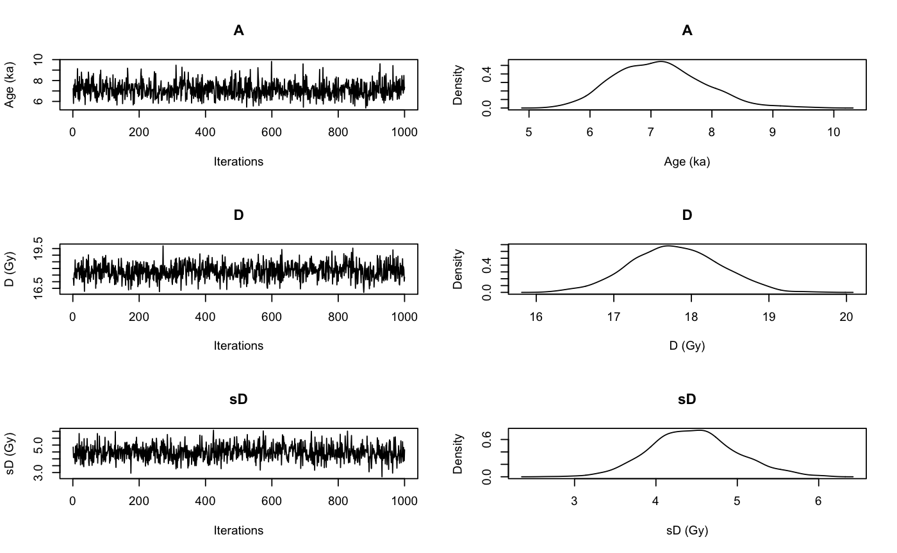

This function uses the output of rjags::jags.model to visualise the traces of the MCMC and the corresponding densities. In particular it displays the posterior distributions of the age, if it is calculated, palaeodose and the equivalent dose dispersion parameters of the sample. The function output is very similar to plot output produced with the 'coda' package, but tailored to meet the needs in the context of the 'BayLum' package.
plot_MCMC(object, sample_names = NULL, variables = c("A", "D", "sD"), axes_labels = c(A = "Age (ka)", D = "D (Gy)", sD = "sD (Gy)"), n.chains = NULL, n.iter = 1000, smooth = FALSE, plot_single = FALSE, ...)
| object | coda::mcmc.list or coda::mcmc (required): Output generated by rjags::jags.model, e.g., in Age_Computation |
|---|---|
| sample_names | character (optional): Names of the used samples. This argument overrides the optional
argument |
| variables | character (with default): Variables in your coda::mcmc object to be plotted. |
| axes_labels | character (with default): Axes labels used for the trace and density plots. The labels should be provided as names character vector with the parameter names as the names used to asign the axes labelling. The labelling for the xaxis (trace plots) and yaxis (density plot) cannot be modified. |
| n.chains | numeric (optional): Set the number of chains to visualise, if nothing is provided the number of chains is determined from the input object |
| n.iter | numeric (with default): Set the number of iterations to be visualised in the trace plots. |
| smooth | logical (with default): Enable/disables smooth of trace plots using stats::smooth |
| plot_single | logical (with default): Enables/disables the single plot mode of the function, i.e.
if set to |
| ... | further arguments that can be passed to modifiy the plot output. Supported arguments are
|
Two plots: Traces of the MCMC chains and the corresponding density plots. This plots are similar to coda::traceplot and coda::densplot.
The function is used in the function Age_Computation, AgeS_Computation and Palaeodose_Computation, but can be used also as standalone plot function.
0.1.0
Age_Computation, AgeS_Computation, Palaeodose_Computation, rjags::coda.samples and rjags packages.
